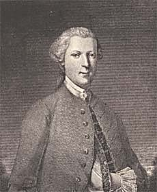

|
|
||||||
|
|
Home | Corson Collection | Biography | Works | Image Collection | Recent Publications | Portraits | Correspondence | Forthcoming Events | Links | E-Texts | Contact Family BackgroundWalter Scott was born on August 15, 1771 in College Wynd, Edinburgh. He was the ninth child of Walter Scott, Writer to the Signet, and Anne Rutherford, but five of his siblings had already died in infancy, and a sixth, Barbara, was to die when he was five months old. Scott's father was heir to a junior branch of the Scotts, a bellicose and litigious clan who since the tenth century had played a prominent role in the warfare and internecine strife that wracked the Border region. On his mother's side, he descended from the Haliburtons of Newmains who brought to the Scott family the hereditary right of burial in Dryburgh Abbey. Walter senior was the first of his family to move to Edinburgh and to follow a profession. His own father, Robert, had directed him toward the Law, calculating that a Border lawyer should make a healthy living out of his countrymen's interminable private feuds. He enjoyed considerable success, rising to the position of senior partner in the firm in which he served his apprenticeship. As a Writer to the Signet, he was at the pinnacle of the sollicitor's calling in Scotland with the privilege of appearing before the Court of Session, the nation's supreme civil court. Scott's father was a strict Calvinist, scrupulously honest in his professional life, and rigid in his educational principles. He is affectionately caricatured in the shape of Alexander Fairford in Scott's 1824 novel Redgauntlet.
In his early months, the young Walter (or 'Wattie' as he was known) proved a robust, lively child. At the age of eighteen months, however, he contracted polio, which would leave him lame for the rest of his life. He was sent to his grandfather's home at Sandyknowe in the Borders to see whether fresh air and exertion would mend his health (see Sandyknowe and Early Childhood). Last updated: 24-Oct-2003
|
|||||